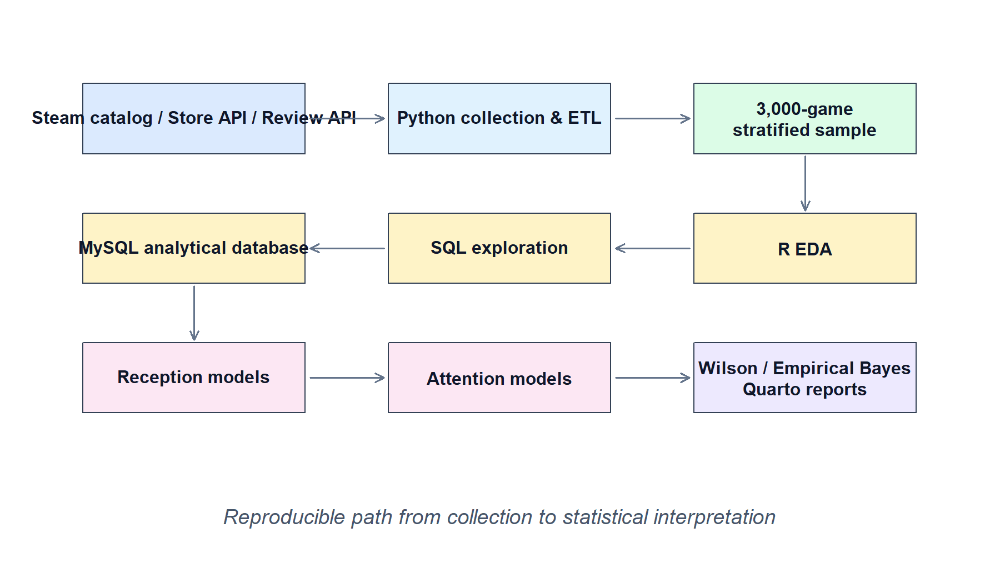
Steam 新游市场与玩家评论统计分析
Steam Game Market & Player Review Analytics — Full Statistical Analysis Report
1 封面与执行摘要
项目定位：这是一个从 Steam 数据采集、关系型数据库、SQL 探索到 R 统计建模的完整分析项目。报告中的结果都是当前 3,000 款游戏快照上的条件关联，不代表销售、收益或因果效果。
1.1 执行摘要
本项目分析了 2025 年下半年（2025-07-01 至 2025-12-31）Steam 新发行游戏的市场结构、玩家评论关注度（attention）和玩家口碑（reception）。从 10,115 个候选游戏中按发布月份进行比例分层抽样，得到 3,000 款游戏；其中 402 款免费、2,598 款付费，759 款（25.30%）没有任何评论。评论量不是销量或拥有量，而是购买者评论关注度的代理指标。
市场最显著的结构是极端长尾：有评论游戏的评论量中位数为 10，均值为 481.69，最大值为 136,842，Gini 系数为 0.953；前 1% 游戏吸收约 65.44% 的评论量。这个结构使得直接对 raw count 拟合普通 Poisson、Negative Binomial 或 zero-truncated NB2 都需要非常谨慎。Step 6B 原始 count 模型保留为诊断案例，但没有冻结。
Reception 部分使用携带正面/负面评论分母的 Beta-binomial regression 作为主要推断模型。标准 Binomial 的 Pearson dispersion 约为 73.52，说明游戏之间存在严重额外异质性。Beta-binomial 在 836 款 paid、至少 20 条评论的游戏上收敛良好，估计的 phi≈8.747、rho≈0.103。在该模型中，价格与正面评价倾向呈弱负关联；Simulation 是稳定的负向 reception 关联，而 Strategy 也总体负向但敏感性略高。
Rating reliability 部分显示，raw positive rate 不能脱离 denominator 解读：1/1=100% 的 Wilson lower 只有约 20.65%，而 1000/1000=100% 的 Wilson lower 约为 99.62%。Empirical Bayes 以 Beta(5.022, 1.045) 为总体先验，低评论量游戏收缩更强；评论量与绝对收缩的 Spearman 相关约为 -0.912。
Attention 采用两阶段 hurdle 思路。Stage 1 的 review-entry 模型保留非线性 paid-price spline；线性价格模型 AIC 为 2387.87，df=3 spline 为 2373.03，中央支持区的拟合峰值约为 $14.92，但这是宽平台上的描述性最大值，不是“最佳定价”。Stage 2 将正评论游戏按 1–9、10–99、100–999、1000+ 分成四个有序 attention tiers，用 cumulative ordinal logistic 描述进入更高关注等级的关联，并用 High-100 logistic（至少 100 条评论）做稳健性检查。Proportional-odds 假设为 APPROXIMATE，但没有 major direction reversal，High-100 方向广泛一致，因此该 tier model 已冻结。
最终结论不是“某个价格导致成功”或“某类游戏天然更差”，而是：市场关注度与玩家口碑是两个不同维度；可靠的分析需要保留 denominator、承认 overdispersion、检查 functional form，并在诊断不通过时改变 estimand，而不是强行冻结一个漂亮但不可信的模型。
2 研究问题与分析路线
2.1 四个研究问题
2.1.1 RQ1 — Market Structure
2025 年下半年 Steam 新发行游戏的价格、平台、类型、评论覆盖率和评论量分布具有什么市场结构？
2.1.2 RQ2 — Attention
哪些游戏更可能获得至少一条玩家评论，并在获得评论后进入更高的评论关注等级？
2.1.3 RQ3 — Reception
在有足够评论后，价格、平台和游戏类型与玩家正面评价倾向之间存在怎样的条件关联？
2.1.4 RQ4 — Rating Reliability
当评论样本较少时，如何避免直接使用 raw positive rate 造成过度乐观或错误排序？
2.2 端到端数据管线
项目使用 Python 完成采集和 ETL，MySQL 保存分析型关系数据，SQL 负责只读探索，R 负责 EDA、模型和诊断，Quarto 负责可复现报告，Git 负责版本控制。报告不展示连接密码、用户名或 console 日志。
3 数据来源、抽样与语义
3.1 抽样设计
候选池包含 10,115 个在研究窗口内发布的游戏。最终样本为 3,000 款，按发布月份进行比例分层抽样，随机种子为 20250911。按月份分层的目的，是避免某一个月份因发行量或暴露时间不同而过度代表整体。
| 指标 | 数量 | 说明 |
|---|---|---|
| 候选游戏 | 10115 | 2025-07-01 至 2025-12-31 候选池 |
| 最终样本 | 3000 | 按发布月份比例分层抽样 |
| 免费游戏 | 402 | 完整市场构成 |
| 付费游戏 | 2598 | 完整市场构成 |
| 零评论 | 759 | 市场层 outcome |
| 至少一条评论 | 2241 | 市场层 attention |
| 评论量模型 20+ | 844 | Reception 预设候选样本 |
月度样本数为：2025-07 497、2025-08 470、2025-09 427、2025-10 544、2025-11 580、2025-12 482。
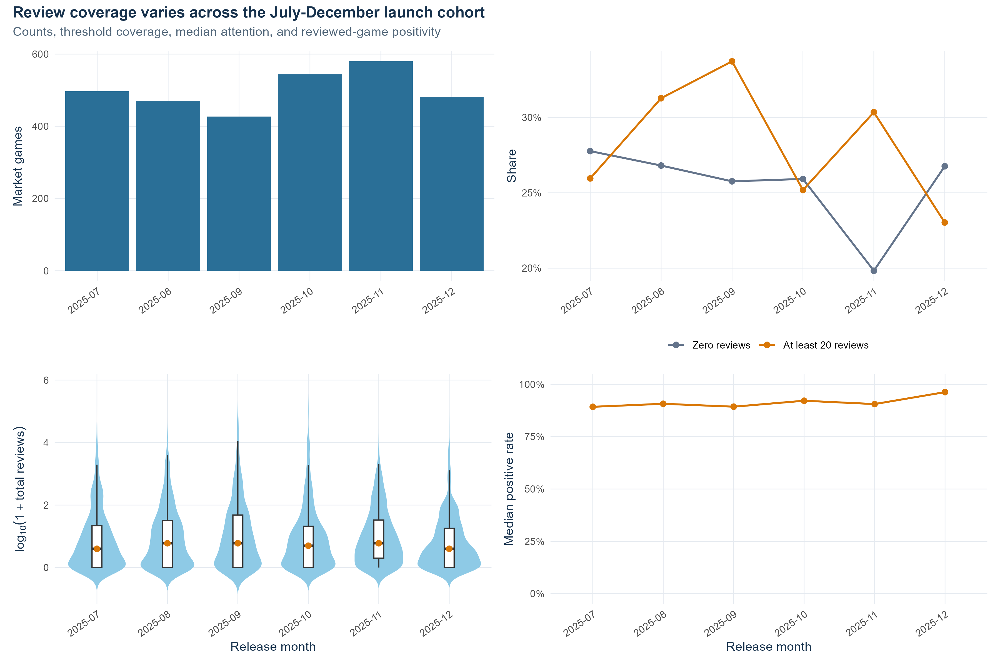
3.2 数据语义与解释边界
- Price 是采集时点的 US storefront current price，不是首发价、历史价格或 reviewer-paid price。
- total_reviews 是 Steam 购买者评论关注度/互动代理，不是销量、owners、收入或商业成功。
- Early Access 是 Steam taxonomy label，不是已经验证的 historical Early Access 状态。
- 游戏类型是 multi-label，类型计数不能当作互斥类别相加。
- 这是 single-snapshot observational design；所有 predictor 结果都称为 association 或 conditional association，不称为 impact、effect 或 cause。
4 市场结构与评论长尾
4.1 市场概览
完整市场包含 N=3,000 款游戏：免费 402（13.40%），付费 2,598（86.60%）；759 款没有评论，2,241 款至少有一条评论。
| 指标 | 数值 |
|---|---|
| 总游戏 | 3000 |
| 免费 | 402 |
| 付费 | 2598 |
| 至少一条评论 | 2241 |
| 零评论 | 759 |
| 零评论比例 | 25.3% |
付费游戏当前价格中位数为 $4.99，均值为 $8.52；价格分布右偏且在低价带高度集中。
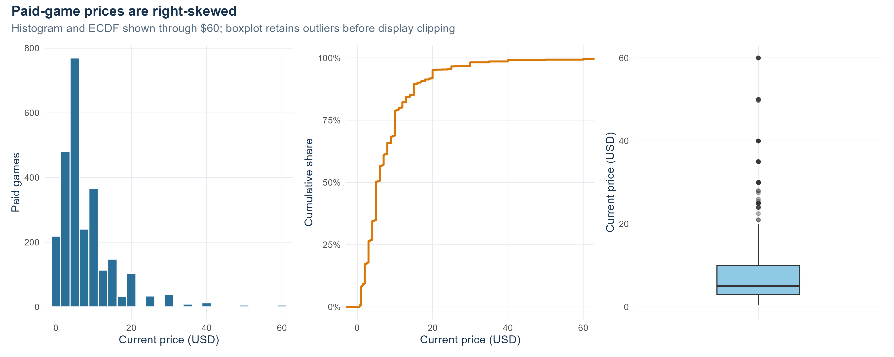
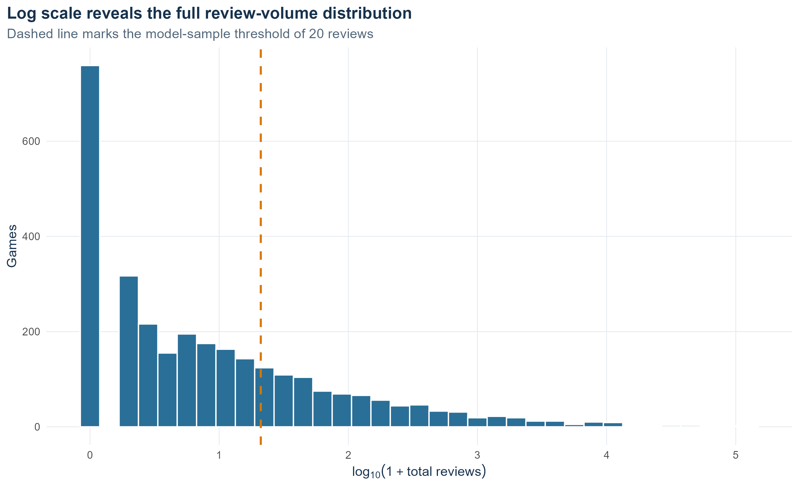
4.2 评论量的 winner-takes-most 结构
完整市场评论量中位数为 4；在 positive-count population 中，中位数为 10，均值为 481.69，最大值为 136,842。Top 1 游戏占 12.68%，Top 1% 游戏占 65.44%，Top 5% 占 89.01%，Top 10% 占 94.52%，Gini 为 0.953。
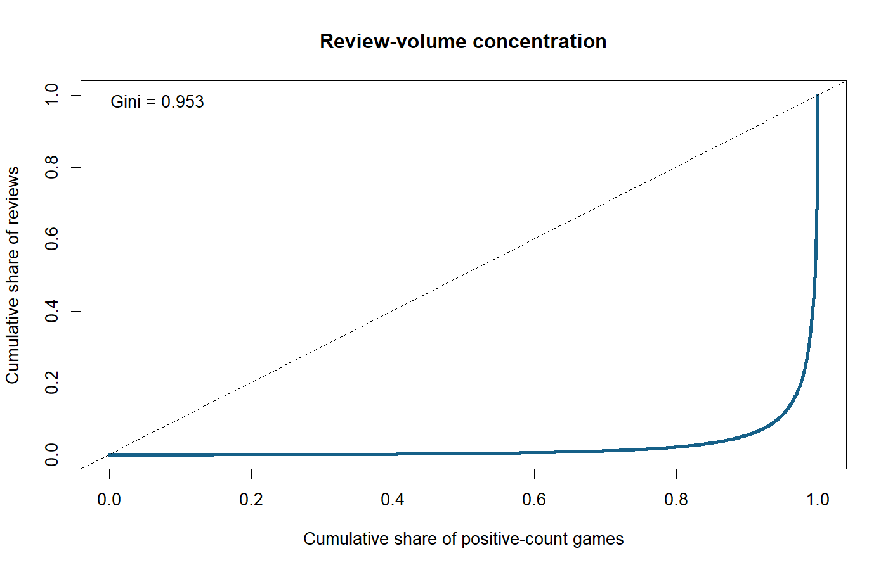
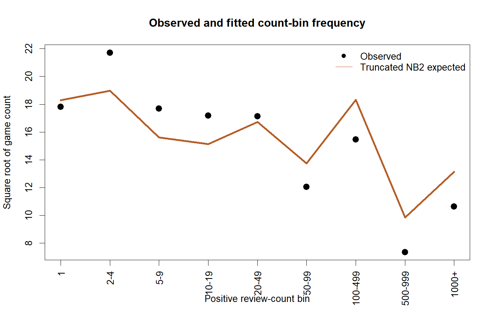
5 Reception：从 Binomial 到 Beta-binomial
5.1 为什么 raw positive rate 不够
正面率的基本形式为
\[p_i = \frac{y_i}{n_i}.\]
但相同的 p=1 并不代表相同的统计证据。评论分母同时决定比例精度，因此后续 reception 模型使用 grouped response (positive_reviews, negative_reviews)，而不是把每个 raw rate 当成同等精度的连续观测。
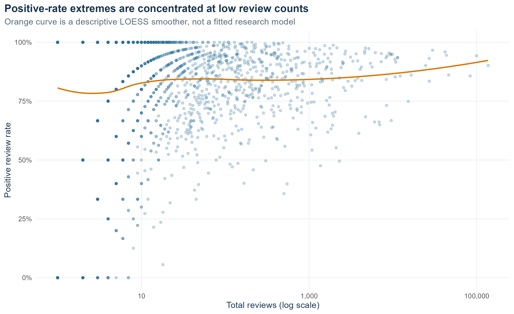
5.2 Reception modeling journey
5.2.1 Binomial benchmark
冻结的标准 Binomial 作为 benchmark，但 Pearson dispersion 约为 73.52，deviance/df 约为 61.82。这意味着标准误和区间会系统性过于乐观。
5.2.2 Quasibinomial
Quasibinomial 将标准误放大约 sqrt(phi)=8.57 倍，point estimates 与 Binomial 基本相同。它能修正 variance scale，却不能完整刻画 latent heterogeneity，也不能解决不同 denominator 带来的贡献差异。
5.2.3 Beta-binomial primary model
Beta-binomial 在 N=836 个 paid games（每款至少 20 条评论）上作为最终 reception primary inferential model。模型收敛，phi≈8.747，派生的 within-game ICC rho≈0.103。表中的区间优先使用 profile-likelihood interval。
| Predictor | OR | CI low | CI high | |
|---|---|---|---|---|
| 2 | z_log1p_price | 0.930 | 0.873 | 0.990 |
| 3 | z_days_since_release | 0.983 | 0.925 | 1.044 |
| 4 | platform_segmentWindows + macOS | 1.443 | 1.172 | 1.795 |
| 5 | platform_segmentWindows + Linux | 1.632 | 1.196 | 2.298 |
| 6 | platform_segmentWindows + macOS + Linux | 1.519 | 1.225 | 1.909 |
| 12 | genre_simulation | 0.786 | 0.692 | 0.894 |
| 13 | genre_strategy | 0.826 | 0.714 | 0.957 |
| 10 | genre_indie | 1.145 | 0.998 | 1.310 |
| 11 | genre_rpg | 0.917 | 0.801 | 1.051 |
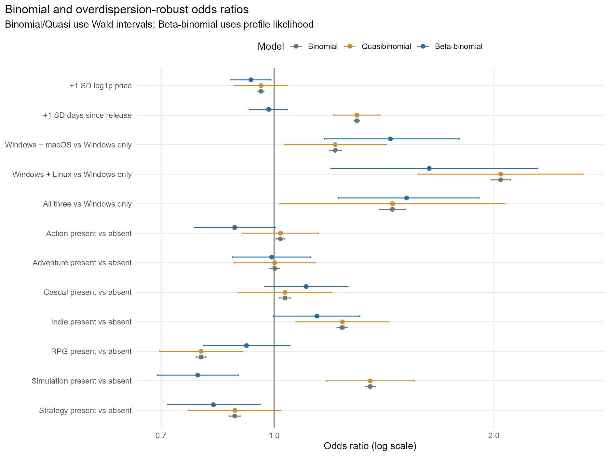
5.3 Reception findings 与敏感性
- Price：在 Beta-binomial 中为弱但稳定的负向关联，OR 约
0.930 [0.873, 0.990]（每一标准差 log-price）。 - Simulation：Beta-binomial OR
0.786 [0.692, 0.894]，而 misspecified Binomial OR 约1.354，发生方向反转。这是“模型假设会改变实质结论”的典型案例。 - Strategy：总体负向，Beta-binomial OR 约
0.826 [0.714, 0.957]，但相对敏感性略高。 - Platform：多平台组合呈正向，但 magnitude 对模型规格敏感，可能反映未观测的开发资源、团队成熟度或发行策略。
- Indie / RPG：区间跨 1 或证据较弱，不作强结论。
Step 5D 比较了 >0、>=10、>=20、>=50 评论阈值，以及 raw price、release month、genre expansion 和 head-game sensitivity。核心方向整体保留，但不同阈值改变 estimand，因此不能用跨样本 AIC 选择“最佳阈值”。
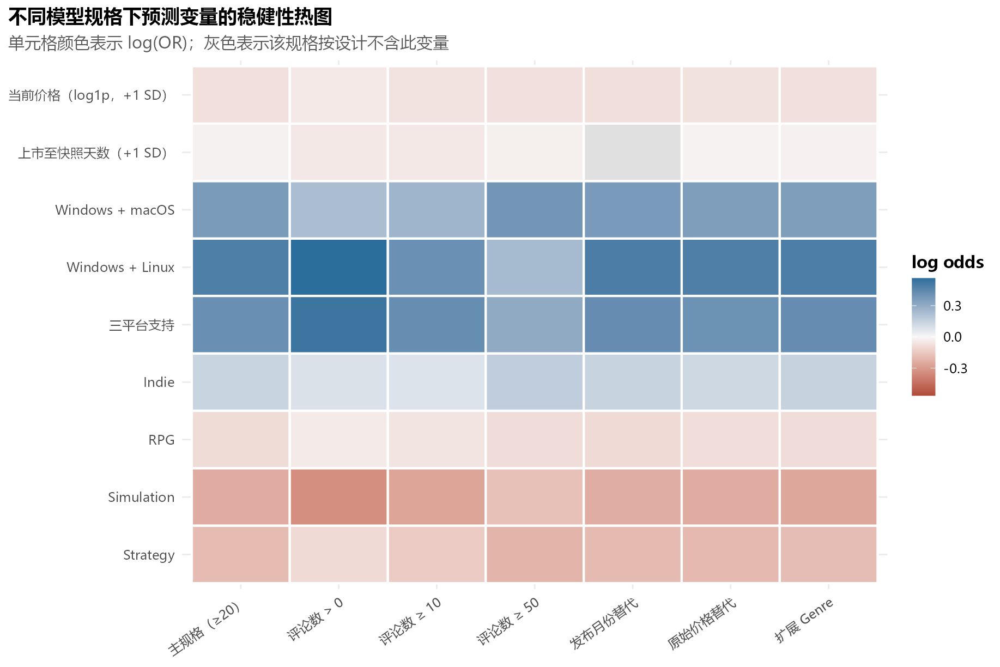
5.4 High-rating secondary model
Step 5E 将 positive_rate >= 85% 定义为 secondary business-readable outcome，并检查 80%/90% 阈值敏感性。HIGH85 样本为 471/836，样本内 AUC 约 0.661。该模型用于易读的二元补充描述，不替代 Beta-binomial；阈值之间不能用 AIC/BIC 选择“最佳阈值”。
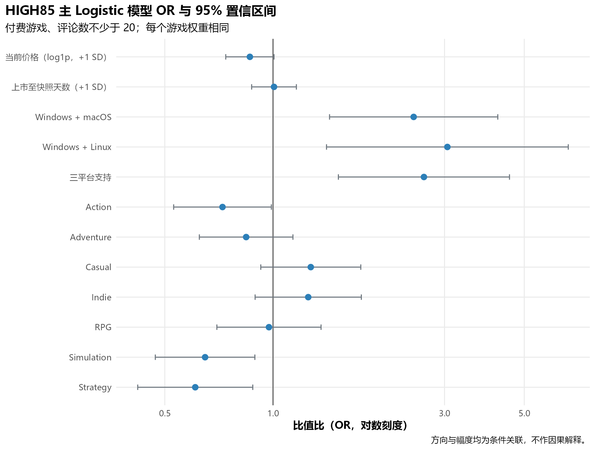
6 Rating reliability：Wilson 与 Empirical Bayes
6.1 Wilson interval
Wilson score interval 只改变不确定性表达，不改变 raw point estimate。两个极端例子是：
1/1=100%，Wilson lower 约20.65%；1000/1000=100%，Wilson lower 约99.62%。
因此，相同的 raw 100% rating 在不同 denominator 下代表完全不同的证据强度。
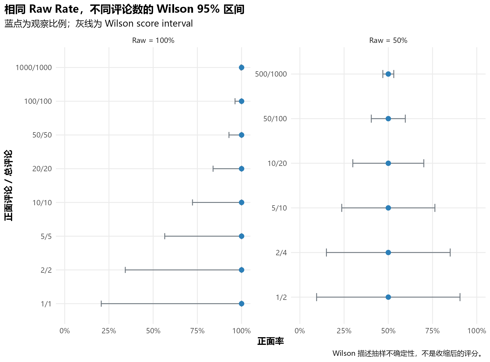
6.2 Empirical Bayes rating adjustment
Empirical Bayes 使用全体 n>0 游戏估计 Beta prior：Beta(5.022, 1.045)，prior mean 约 82.78%，ESS 约 6.07。后验均值为
\[E[p_i\mid y_i,n_i] = \frac{y_i+\alpha}{n_i+\alpha+\beta}.\]
低评论量游戏受到更强 shrinkage，高评论量游戏几乎不变。评论量与绝对收缩的 Spearman 相关为 -0.912；1,000+ reviews 游戏的 median absolute shrinkage 约 0.017 个百分点。
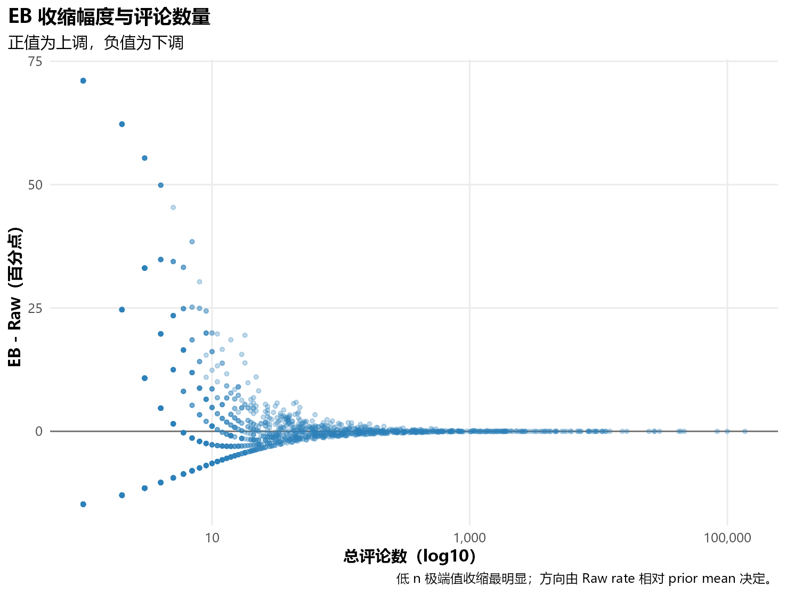
6.3 Raw ranking 与 reliability-aware ranking
Raw vs Wilson、Raw vs EB、Wilson vs EB 的 Spearman 相关分别约为 0.2395、0.7761、0.6725。Raw ranking 很大程度受低 denominator 的 100% ties 影响；832 款游戏的 raw rate 为 100%，其中 762 款虽然 raw rate 至少 95%，但 Wilson lower 低于 80%。
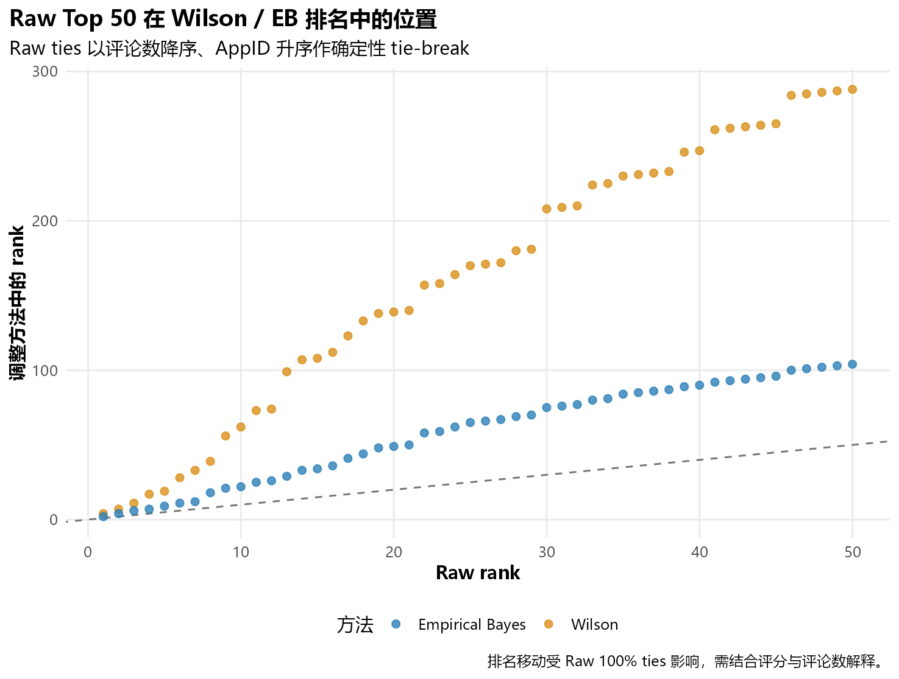
7 Attention：从 review entry 到 intensity
7.1 Hurdle structure
Attention 被拆成两个 estimand：
- Stage 1：
P(Y>0)，游戏能否获得至少一条评论； - Stage 2：在
Y>0条件下，进入更高 attention intensity 的关联。
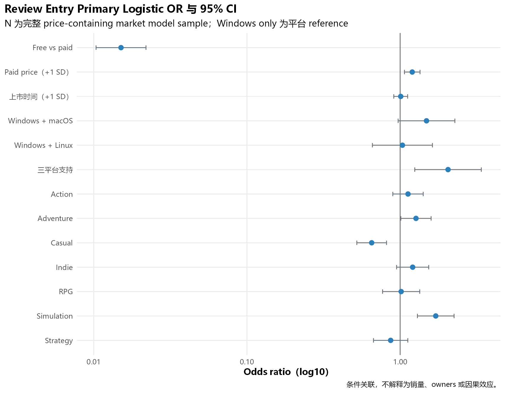
Stage 1 中，free has-review rate 为 8.46%，paid 为 84.95%。这说明 free/paid 构成差异巨大；它可能同时反映受众、发行策略、可发现性、质量和开发成熟度等因素。
7.2 Nonlinear price specification for entry
Step 6A.1 保留 logistic framework，仅把 paid-price linear term 换为 centered Natural Spline（df=3）。Linear AIC 为 2387.87，spline AIC 为 2373.03，Delta AIC≈-14.84。拟合曲线在约 $14.92 达到 pointwise maximum，但 $11.07–$20.30 是宽 plateau，不能称为“最佳定价”。
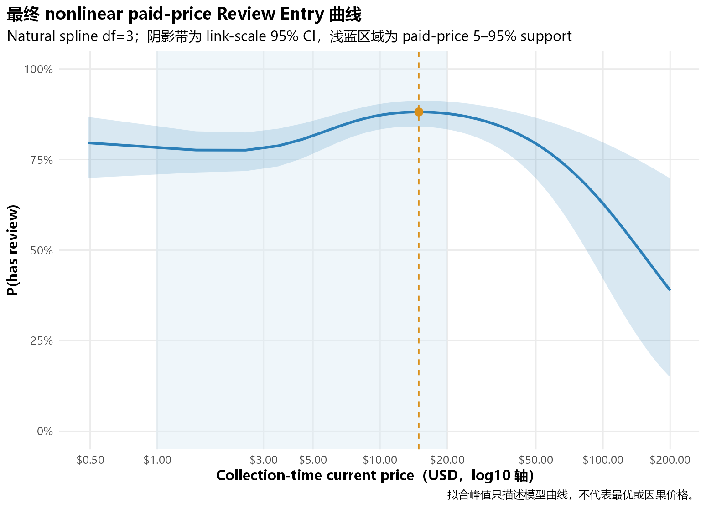
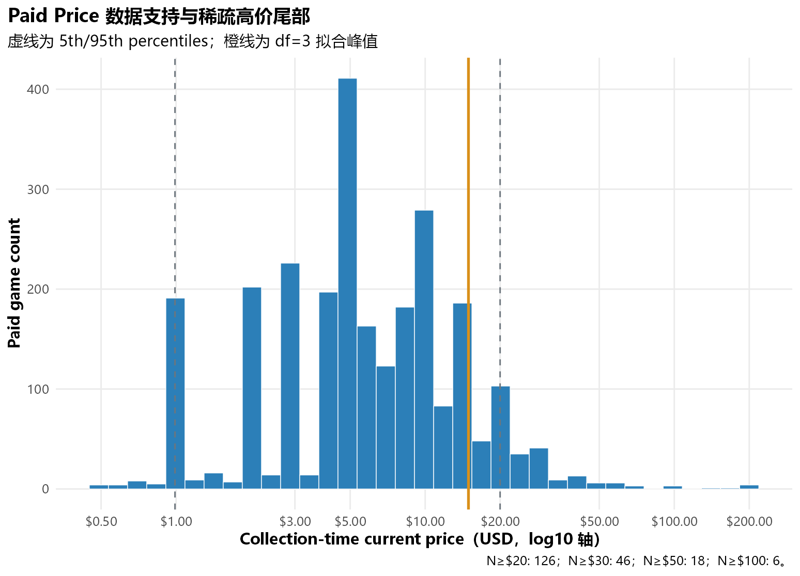
| Predictor | OR | CI low | CI high | |
|---|---|---|---|---|
| 2 | is_free | 0.015 | 0.010 | 0.021 |
| 6 | platform_segmentWindows + macOS + Linux | 1.999 | 1.209 | 3.304 |
| 9 | genre_casual | 0.661 | 0.528 | 0.828 |
| 12 | genre_simulation | 1.725 | 1.307 | 2.276 |
主要关联包括：free 的 entry odds 很低；三平台支持与较高 entry odds 相关；Simulation 与较高 entry odds 相关；Casual 与较低 entry odds 相关。所有结果仍是 composition-adjusted association。
7.3 Why raw review counts required a different strategy
Positive-count raw model 的诊断是方法选择的一部分，而不是应被隐藏的失败。Poisson Pearson dispersion 约为 16,774；ordinary NB2 的 theta≈0.273；truncated NB2 的 theta≈1.3×10^-9。虽然 truncated NB2 AIC 约为 21,297，但 residual distribution mismatch、extreme head concentration、tail sensitivity 和 price curve instability 仍然存在。
因此，项目没有因为 AIC 最低就冻结 raw count model，也没有为了得到显著结果继续增加未经预设的复杂模型。注意力强度的 estimand 改为有序 tiers，是比继续修补单一 count likelihood 更透明的选择。
8 Attention tiers：稳定的 portfolio-level intensity model
8.1 Tier reformulation
在 total_reviews>0 的 2,241 款游戏中定义：
- Tier 1：1–9 reviews，49.17%；
- Tier 2：10–99 reviews，32.71%；
- Tier 3：100–999 reviews，13.07%；
- Tier 4：1,000+ reviews，5.04%。
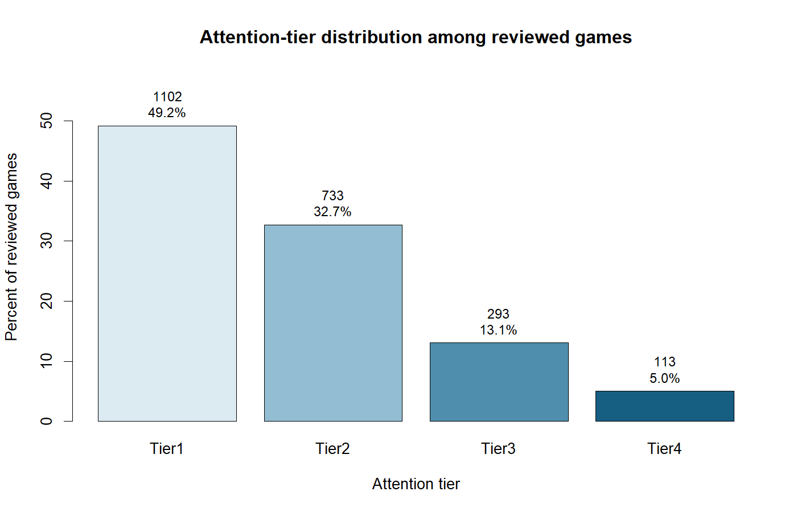
8.2 Ordinal Logistic Regression
最终主模型为 cumulative / proportional-odds ordinal logistic：
\[\log\frac{P(Y\le k)}{P(Y>k)} = \alpha_k - X\beta.\]
它研究的是 predictor 与“进入更高 attention tier”的关联，而不是评论数增加多少倍。模型保留 is_free、paid price Natural Spline df=3、log(days_since_release)、platform segment 与七个 genre；不使用 offset。
| Predictor | OR | CI low | CI high | |
|---|---|---|---|---|
| 1 | is_free | 0.508 | 0.249 | 1.034 |
| 5 | log_days | 2.756 | 1.600 | 4.749 |
| 8 | platform_segmentWindows + macOS + Linux | 1.791 | 1.317 | 2.435 |
| 10 | genre_adventure | 1.302 | 1.098 | 1.544 |
| 13 | genre_rpg | 1.310 | 1.068 | 1.606 |
| 14 | genre_simulation | 1.436 | 1.185 | 1.740 |
| 15 | genre_strategy | 0.860 | 0.697 | 1.059 |
Proportional-odds audit 使用三个 threshold-specific logits（>=10、>=100、>=1000）。部分弱效应在边界间变化，因此结论为 APPROXIMATE；但没有 major direction reversal，High-100 robustness 为 PASS。
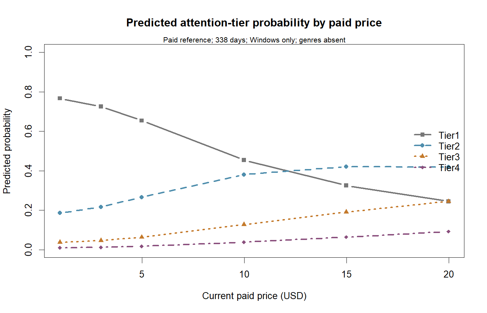
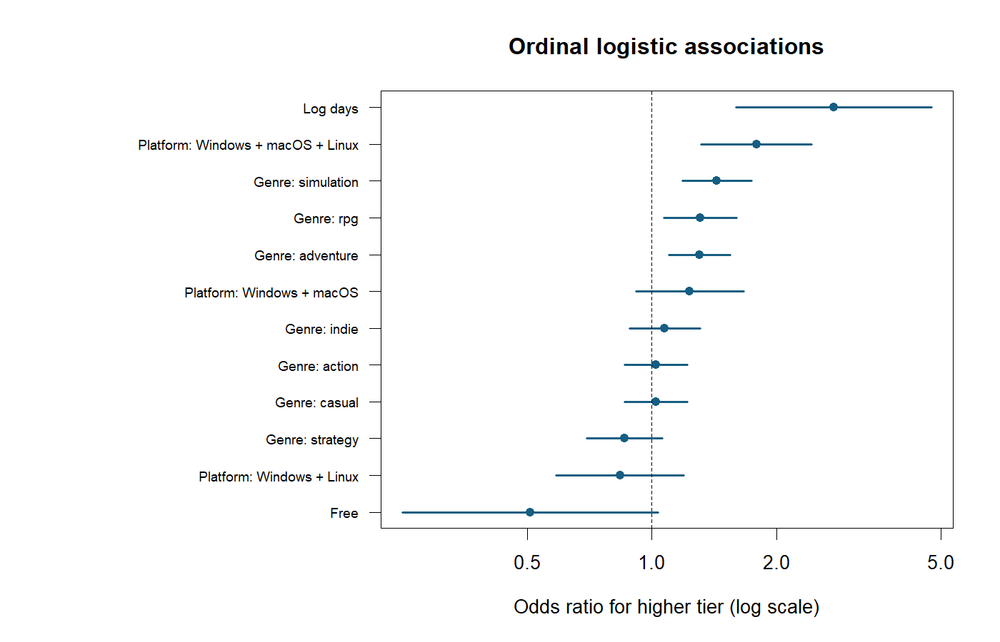
High-100 robustness model 的 outcome 是 total_reviews>=100，事件数为 406，使用完全相同的 predictors。它与 ordinal model 没有 major magnitude contradiction，支持 portfolio-level freeze。
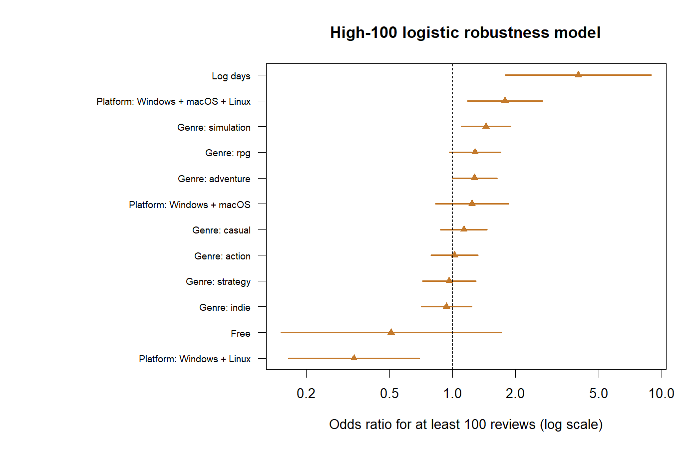
9 Attention vs Reception：跨模型比较
Attention 和 reception 是不同 outcome，不能比较 OR 的数值大小，只比较 direction / positive / negative / uncertain。最有解释价值的交叉结果是：Simulation 更容易进入较高 attention tier，但在条件 reception 模型中呈负向关联；multi-platform 在两个维度均呈正向；RPG、Adventure 的 attention 方向为正，但 reception 证据不足。
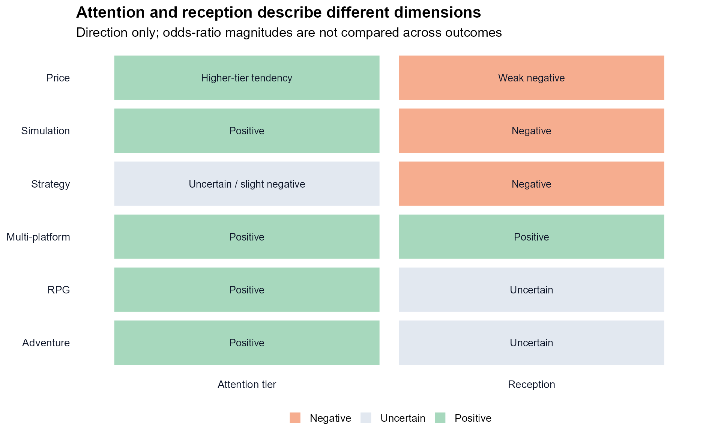
10 模型决策与方法论总结
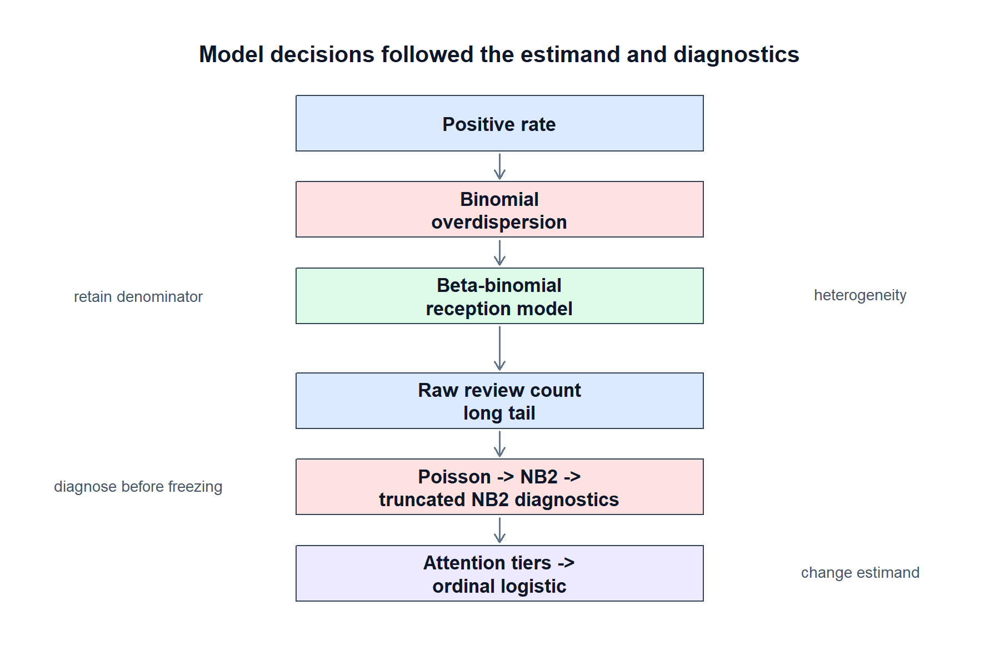
10.1 五个统计经验
- Denominator matters：比例不能脱离分母；Wilson 和 Beta-binomial 都显式保留这一点。
- Overdispersion matters：真实市场的游戏间异质性可以远大于 Binomial / Poisson 假设。
- Functional form matters：paid price 的线性项会掩盖 review-entry 的非线性结构。
- Diagnostics matter：AIC 最低不等于模型可用；tail、残差、稳定性和支持范围同样重要。
- Estimand matters：raw count 不稳定时，改成有序 attention tiers 比继续堆叠复杂模型更符合研究目标。
11 主要结论
- 3,000 款样本中 25.30% 没有 Steam 评论，评论 entry 本身就是重要的市场分化。
- 评论 attention 极度集中：Top 1% 游戏贡献约 65.44% 的正评论量。
- raw positive rate 在低 denominator 下高度不可靠；Wilson 与 EB 提供了不同用途的可靠性辅助。
- Beta-binomial 是 reception 的主要推断模型，标准 Binomial 的严重 overdispersion 不能忽略。
- Price 与 reception 呈弱负向条件关联；Simulation reception 为稳定负向，Strategy 总体负向但较敏感。
- Review-entry 的 paid-price relationship 是明显 nonlinear，中央支持区是宽平台而不是单一最优价格。
- 原始 positive-count model 因 extreme tail 和诊断问题未冻结，失败记录作为方法论案例保留。
- Ordered attention-tier model 提供了更稳定、可解释的 portfolio-level intensity 描述。
- Attention 与 reception 是两个不同维度；高关注不自动意味着更高口碑。
12 限制与不作出的声明
12.1 研究限制
- single snapshot，不能代表随时间变化的生命周期结果；
- price 是 current storefront price，不是 launch price；
- 没有 sales、owners、revenue、marketing spend 或真实曝光数据；
- observational design，存在未观测的 marketing、brand、quality 和发行策略；
- genre 是 multi-label；
- positive-count free subgroup 稀疏；
- attention tiers 会牺牲 tier 内的原始 count 差异；
- ordinal proportional-odds assumption 仅 approximate；
- 所有回归结果均为 conditional association，不是 causal effect。
12.2 本项目不声称
- price causes attention 或 better ratings；
- platform causes better ratings；
- reviews equal sales；
- Empirical Bayes score 等于真实 game quality；
$14–15是 optimal pricing；- Simulation games are inherently worse。
13 技术栈、复现与冻结状态
13.1 Technical stack
- Python：Steam collection、ETL、抽样与可复现数据处理；
- MySQL：分析型关系数据库；
- R：EDA、回归、诊断、敏感性与可视化；
- Quarto：可复现 HTML 报告；
- Git：版本控制与审计轨迹。
主要 runner 包括 R/run_eda.R、R/run_rating_adjustment.R、R/run_attention_entry.R、R/run_attention_entry_nonlinear.R、R/run_attention_count.R 和 R/run_attention_tier.R。本报告只读取已经冻结的 CSV 和 PNG 产物，不重新拟合模型。
13.2 Reproducibility audit
当前完整测试套件为 270 passed；MySQL 数据库只读且对象计数未改变；credential safety PASS；Step 6B.1 attention-tier model 已冻结，attention analysis 已关闭。HTML 报告不打印 .env、密码、用户名或数据库连接输出。
13.3 Final status
Data collection / sampling: FROZEN
MySQL analytical database: FROZEN
SQL exploration: FROZEN
R EDA: FROZEN
Reception models: FROZEN
Attention entry and nonlinear price: FROZEN
Raw positive-count model: DIAGNOSTIC FAIL / RETAINED
Attention-tier ordinal model: FROZEN
Full statistical analysis report: COMPLETE
Ready for GitHub / portfolio presentation: YES